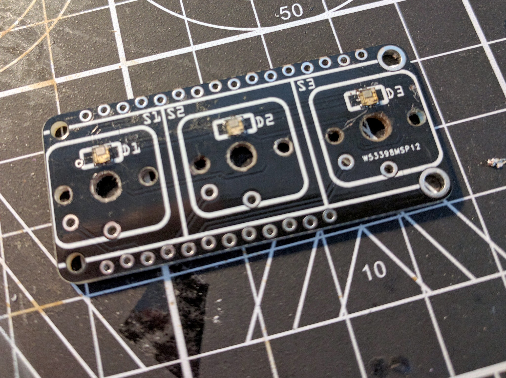

Prototype¶
Published on 2019-11-18 in Keys FeatherWing.
The PCBs arrived already, so I assembled the prototype. Of course it’s a very easy design, so I had to do something wrong — in this case, the holes in the switch footprint are slightly too small. I will need to add some 0.25mm to them to make the switch fit in there, but for now I just used the reaming tool to enlarge the holes.
Soldering the APA102 RGB LEDs was a bit of a challenge, but with a few tries with a hot air gun I got them all to light up. There should be no problem with them when done with solder paste and an oven.
You can see that the holes on the sides are staggered — that means you can insert your pin headers in there without soldering, and it will give you good enough connection still! Of course if you get any problems, you cal always solder them.
While the switches fit within the board’s outline, the key caps you put on them might stick out a little bit to the sides, but I think that it’s fine, as then you can make a case for the device that is exactly flush with the key caps.